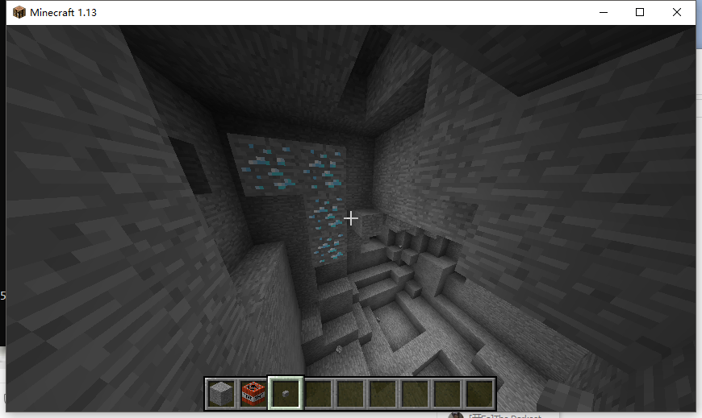
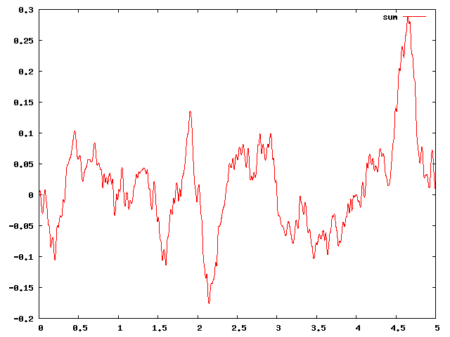

本文基于 Minecraft 1.13，介绍 Bukkit 中的世界生成器，和地形生成的部分原理与运用。
加工现有 World Generator
在 Bukkit 中，有一个 org.bukkit.WorldCreator 类，可以用于创建新的世界；而这个类中，有一个名为 generator() 的方法可以提供自定义的地形生成器（这也是下一节将会讲到的东西），如果不提供 generator 的话，Bukkit 将会使用内部的生成器。
Minecraft 原版的世界生成分为两个阶段，Generation 和 Population。我们将会对 Population 阶段进行修改：
世界加载时会触发 WorldInitEvent，这时世界已经加载好了所需的相关设置，即将进行区块生成。我们需要为这个世界添加自定义的 BlockPopulator：
public class ExtendVanillaGenerator implements Listener {
@EventHandler
public void onInit(WorldInitEvent event) {
if ("world".equals(event.getWorld().getName())) {
event.getWorld().getPopulators().add(new PumpkinPopulator());
}
}
private static class PumpkinPopulator extends BlockPopulator {
@Override
public void populate(World world, Random random, Chunk chunk) {
// 随机生成一些南瓜的数量
int amount = random.nextInt(8);
for (int i = 0; i < amount; i++) {
// 随机位置
int x = random.nextInt(16);
int z = random.nextInt(16);
for (int y = 255; y >= 0; y--) {
if (chunk.getBlock(x, y, z).getType() != Material.AIR) {
// 只让南瓜生成在草方块上
if (chunk.getBlock(x, y, z).getType() == Material.GRASS_BLOCK
&& chunk.getBlock(x, y + 1, z).getType() == Material.AIR)
chunk.getBlock(x, y + 1, z).setType(Material.PUMPKIN);
break;
}
}
}
}
}
}我们想让世界在任何地方都随机生成一些南瓜，那么启动游戏看看效果：
南瓜的确变多了。
Minecraft 原版的所有世界生成的类都在 nms 包内以 WorldGen 开头，可以自行反编译查看他们的实现：
简单的超平坦生成器
假设你对 Bukkit 插件已经有了一些了解，主类大概看起来是这样的：
public class WorldGenTutor extends JavaPlugin {
@Override
public ChunkGenerator getDefaultWorldGenerator(String worldName, String id) {
return null;
}
}覆盖 getDefaultWorldGenerator 方法，然后编辑 bukkit.yml ：
worlds:
world:
generator: 插件名当然，你也可以为这个世界指定同一个插件的不同生成器（当然你的插件需要根据 id 判断并实现对应功能），将 generator 后编辑为 插件名:id 即可，这里的 id 将会作为上文的方法的第二个 String 参数。
最后，如果你想要控制主世界的生成，你需要在 plugin.yml 中加上 load: startup。
届时，Bukkit 已经认可你的插件是可以提供世界生成器了，但是目前而言，这个方法仍然返回 null，我们需要给他加上对应的功能。
实现一个 ChunkGenerator
创建一个新的类，看起来是这样的：
public class FlatGenerator extends ChunkGenerator {
}超平坦应该是这样的：
最下两层为基岩，第三层为草方块，其他什么也不要：
public class FlatGenerator extends ChunkGenerator {
@Override
public ChunkData generateChunkData(World world, Random random, int x, int z, BiomeGrid biome) {
// 创建区块数据
ChunkData chunkData = createChunkData(world);
// 一个区块的大小为 16*16，高度为 0-255
// 将这个区块的 (0,0,0) 到 (16,2,16) ，即最低两层填充为基岩
chunkData.setRegion(0, 0, 0, 16, 2, 16, Material.BEDROCK);
// 将第三层填充为草方块
chunkData.setRegion(0, 2, 0, 16, 3, 16, Material.GRASS_BLOCK);
// 将整个区块的生物群系设置为平原（PLAINS）
for (int i = 0; i < 16; i++) {
for (int j = 0; j < 16; j++) {
biome.setBiome(i, j, Biome.PLAINS);
}
}
return chunkData;
}
}ChunkData 类用于存储世界的方块信息，BiomeGrid 用于存储生物群系信息。
这一节就在这里结束了，至此，如果认真阅读了源码，你应该已经了解了如何创建一个 Bukkit 上的地图生成器了。
基于噪声的生成器与 BlockPopulator
目前，网络上能找到的各种世界生成器的教程/资源，按照以下的方式生成一个地图：
- 使用噪声函数生成一串随机但是连续的数字
- 使用这些数字的大小表示地形的高度/湿度/其他属性
- 使用这些属性决定生物群系
什么是噪声函数呢？
噪声函数，基本上是一个种子随机发生器。它需要一个数作为参数，然后根据这个参数返回一个随机数。如果两次都传同一个参数进来，它就会产生两次相同的数。这个性质决定了 Minecraft 使用相同的种子总是生成相同的地形，
如果每个相近的参数生成的随机数相差太大，那么 Minecraft 的地形将是无比混乱的。噪声函数在传入连续的数字时，返回的随机数的差值是不大的，整体数值呈现随机但连续起伏。
关于噪声函数，你可以去这里看看。如果你能够硬肛全洋文文档，你也可以去这里看看，这一篇详细的讲解了各种噪声的区别，
那么 Mojang 的生成器是如何运作的呢？
根据土球的答案，我们可以了解到 Minecraft 的地形生成与上文不同，是先生成生物群系，再通过群系来决定地形（如高度）。生成的地形分为两个大阶段，Generation 时期生成主要的地形，Population 时期生成点缀，比如树。
土球回答的下面也有一个答案，那个答案比较详细的讲述了 Minecraft 的地形生成过程。
我们的生成器
我们采用地形决定群系的方式。首先是生成地形。常用的噪声函数有 Perlin Noise 和 Simplex，我们采用 Simplex。
public class NormalGenerator extends ChunkGenerator {
private SimplexOctaveGenerator noise;
@Override
public ChunkData generateChunkData(World world, Random random, int chunkX, int chunkZ, BiomeGrid biome) {
ChunkData chunkData = createChunkData(world);
// 我们需要的噪声生成器
if (noise == null) {
noise = new SimplexOctaveGenerator(world.getSeed(), 1);
// 我们需要更平缓的地形，所以需要设置 scale
// 该值越大，地形变化更大
// 微调即可
noise.setScale(0.005D);
}
for (int x = 0; x < 16; x++) {
for (int z = 0; z < 16; z++) {
// 方块的真实坐标
int realX = chunkX * 16 + x;
int realZ = chunkZ * 16 + z;
// noise 方法返回 -1 到 1 之间的随机数
double noiseValue = noise.noise(realX, realZ, 0.5D, 0.5D);
// 将 noise 值放大，作为该点的高度
int height = (int) (noiseValue * 40D + 100D);
// 底层基岩
chunkData.setBlock(x, 0, z, Material.BEDROCK);
// 中间石头
for (int y = 0; y < height - 1; y++) {
chunkData.setBlock(x, y, z, Material.STONE);
}
// 表面覆盖泥土和草方块
chunkData.setBlock(x, height - 1, z, Material.DIRT);
chunkData.setBlock(x, height, z, Material.GRASS_BLOCK);
}
}
return chunkData;
}
}
有点单调，除了默认生成的生物以外没有任何东西，并且地形看起来也很单调。
加点东西
如果只是小小地点缀一下地图，BlockPopulator 是再适合不过的选择了。
重写 getDefaultPopulators 方法，返回我们自定义的：树！
@Override
public List<BlockPopulator> getDefaultPopulators(World world) {
return ImmutableList.of(new TreePopulator());
}
private static class TreePopulator extends BlockPopulator {
@Override
public void populate(World world, Random random, Chunk chunk) {
// 假设只有 1/4 的区块生成树
if (random.nextInt(4) < 1) {
// 假设每个区块生成 1-3 颗树
int amount = random.nextInt(3) + 1;
for (int i = 0; i < amount; i++) {
// 随机生成树的坐标
int x = random.nextInt(16);
int z = random.nextInt(16);
int y = 255;
// 找到最高的方块来生成树
while (chunk.getBlock(x, y, z).getType() == Material.AIR) y--;
// 生成树
world.generateTree(chunk.getBlock(x, y, z).getLocation(),
// 搞点有趣的，我们随机选择不同的树生成
TreeType.values()[random.nextInt(TreeType.values().length)]);
}
}
}
}效果拔群。在下面这个实例里，我把 scale 从 0.005 调成了 0.0025，地图变得非常平缓。
（最终还是没有蘑菇树，果然还是不行呢）
地面上不是那么单调了，但是 Minecraft 的特色可不止地面上。现在，我们往这个世界加一点矿物：
@Override
public List<BlockPopulator> getDefaultPopulators(World world) {
return ImmutableList.of(new TreePopulator(), new DiamondPopulator());
}
private static class DiamondPopulator extends BlockPopulator {
@Override
public void populate(World world, Random random, Chunk chunk) {
// 假设每个区块只有一个钻石矿
// 钻石矿脉随机生成在高度 16 以下
int x = random.nextInt(16);
// 不要生成在基岩上
int y = random.nextInt(15) + 1;
int z = random.nextInt(16);
// 继续生成的几率
while (random.nextDouble() < 0.8D) {
// 只替换岩石
if (chunk.getBlock(x, y, z).getType() == Material.STONE) {
chunk.getBlock(x, y, z).setType(Material.DIAMOND_ORE);
}
// 向某个方向随机继续生成
switch (random.nextInt(6)) {
case 0: x++; break;
case 1: y++; break;
case 2: z++; break;
case 3: x--; break;
// 不要生成到基岩下面去了
case 4: y = Math.max(y-1, 0); break;
default: z--; break;
}
}
}
}经过暴力开采后找到了我们的钻石矿。

你可以仿照这个方法生成其他矿物。
玩转 NoiseGenerator / OctaveGenerator
读了上面几章以后，你一定对代码中出现的 PerlinNoiseGenerator / SimplexOctaveGenerator 感到疑惑了。这一章将会教会你 噪声函数 的各种概念，以及如何使用。
如果你能够访问 archive.org 并且可以阅读英文，那么你可以看看这一篇文章。
噪声函数？
各位想必用过随机数生成器，即 Java 的 Random 类，虽然这个类很好的满足了我们对于不可预测性的需求，但是它的输出过于随机；在这种情况下，Ken Perlin 发明了 Perlin 噪声函数。Perlin 函数看起来是这样的：
如果传入更连续的参数，最终的结果会是这样的：
噪声函数的形状被我们用于生成地形。
函数的一些特性
这是一个普通的正弦波
- amplitude：振幅，为波的高度
- wavelength：波长，为每个峰之间的距离
- frequency：频率，为 1/波长
这是一个噪声函数
- 每个红点代表函数的随机值
- 振幅为函数可能取得的最大值和最小值的差值
- 波长为每个红点之间的距离
- 频率仍然为 1/波长
现在，脑补一个随机的噪声，脑补一下增加/减少它的频率，增加/减少它的振幅。
当振幅减少时，函数将会变「矮」，当频率增加时，函数起伏更加剧烈。
如果我们把低频高幅的函数和高频低幅的函数混合起来：
就会得到和原有单调的噪声函数完全不同的、更为复杂的函数图像：
数学表达式？
我们将 噪声函数 定义为 noise(x) ，返回值为 0-1 的小数。
那么上文的混合函数写出来可能就是这样的：
f(x) = 1*noise(x) + 0.5*noise(2x) + 0.25*noise(4x) + 0.125*noise(8x) + 0.0625*noise(16x)在数学表达式中，我们可以简单的把 2x 4x 8x 里的数字称为频率，将 0.5 0.25 0.125 称为振幅。
到这里，有心的读者可能会注意到了，这个 f(x) 最后的值不是可以大于 1 了，还能叫噪声函数吗？
别担心，记住这个问题，继续往下看。
代码？
上文的混合函数可以写成这样：
/**
* 假设此函数返回 0-1 之间的随机数，并且满足噪声函数的相关定义
*
* @param x 参数
* @return 0-1 的随机数
*/
static double noise(double x) {
return 0;
}
/**
* 噪声函数
*
* @param x 参数
* @param freq 频率
* @param amp 振幅
* @return 函数值
*/
static double f(double x, double freq, double amp) {
return amp * noise(x * freq);
}
static double f(double x) {
return f(x, 1, 1) + f(x, 2, 0.5) + f(x, 4, 0.25) + f(x, 8, 0.125);
}这项技术被称为分形：
维基百科：
分形噪声是上述 Perlin 1985年的文章中提出的将符合上文所述三条件的噪声通过计算分形和构造更复杂效果的算法。
在一维的情况下，设噪声函数为noise(x)，则通过 noise(2x), noise(4x) 等就可以构造更高频率的噪声。

你可能也注意到了，分形函数中，我们可以将分形次数提取出来，作为单独的一个参数，这个参数我们称之为 octave。那么上文代码里最后一个方法可以写成这样：
static double f(double x, double freq, double amp, int octaves, boolean normalized) {
double result = 0.0D;
double a = 1.0D;
double f = 1.0D;
double max = 0.0D;
for (int i = 0; i < octaves; ++i) {
result += f(x, f, a);
max += amp;
f *= freq;
a *= amp;
}
if (normalized) {
result /= max;
}
return result;
}前文代码中最后一个 f() 方法就与目前我们的 f(x, 2, 0.5, 4, false) 的作用相同了，仔细想想，是不是这样？
这 normalized 参数是干啥的？上文中我（也可能是读者你）提出了一个问题，这个参数即是解决这个问题的。仔细想想，是不是这样。
NoiseGenerator 与 OctaveGenerator
到了这里，我们只剩一个问题了：最开始的代码里的 noise 方法，如何实现呢？
org.bukkit.util.noise 包内有 4 个类，用于提供生成噪声函数的方法。
static double bukkitNoise(double x, double freq, double amp, int octaves, boolean normalized) {
SimplexNoiseGenerator generator = new SimplexNoiseGenerator(new Random());
return generator.noise(x, octaves, freq, amp, normalized);
}
static double bukkitOctave(double x, double freq, double amp, int octaves, boolean normalized) {
SimplexOctaveGenerator generator = new SimplexOctaveGenerator(new Random(), octaves);
return generator.noise(x, freq, amp, normalized);
}如果你认真的看了上面的所有文章，并且认真的思考过后，你应该已经掌握了这几个类的用处了。
几点需要注意的地方：
- Bukkit 的噪声函数类返回 -1 到 1 的值，与上文的 0 到 1 不同，自行处理即可
- Bukkit 的噪声函数类默认频率很大，所以需要使用小频率（OctaveGenerator 的 setScale(0.005)）
- 对于给定的相同种子，调用同一个点的函数总返回相同值
最后一个问题：为什么会有 PerlinXxxxGenerator 和 SimplexXxxxGenerator 两种呢？
Perlin 是初代噪声函数，Simplex 基于 Perlin 优化，得到的图像更好看，在高维度的速度也更快。
噪声函数使用技巧
Math.pow
这个函数的图像是这样的：
你可以用这个函数让山峰更加陡峭，让山谷更加平坦。
n1 = new PerlinNoiseGenerator(random);
double e = n1.noise(x * 0.01F, z * 0.01F, 6, 2.0F, 0.5F);
e = Math.pow(e, 2.5);
elevation[x][z] = (int) (64 + e * 64F);
Math.abs
你可以用此创建锋利的山脊。
function ridgenoise(x, z) { return 2 * (0.5 - abs(0.5 - noise(x, z))); }
e0 = 1 * ridgenoise(1 * x, 1 * z);
e1 = 0.5 * ridgenoise(2 * x, 2 * z) * e0;
e2 = 0.25 * ridgenoise(4 * x, 4 * z) * (e0+e1);
e = e0 + e1 + e2;
elevation[x][z] = Math.pow(e, 2.5);附录
本文中所有源码位于 https://github.com/PluginsCDTribe/WorldGenTutor 。
本文部分参考 https://www.redblobgames.com/maps/terrain-from-noise/ 。
作为补充可以阅读 Yaossg 的 1.13 世界生成介绍 https://yaossg.com/blog/1-13-worldgen/ 。